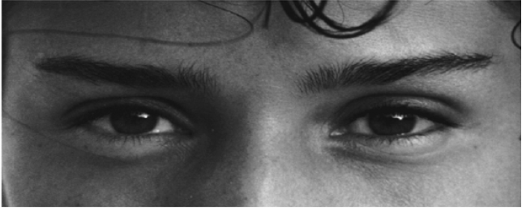
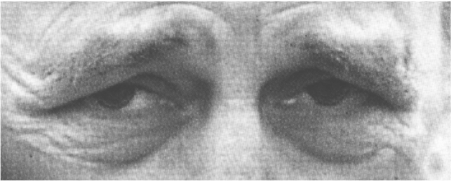
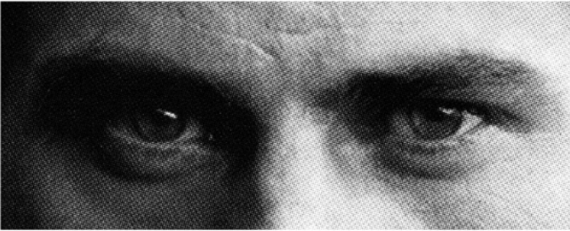
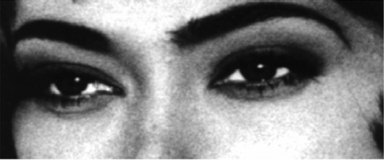
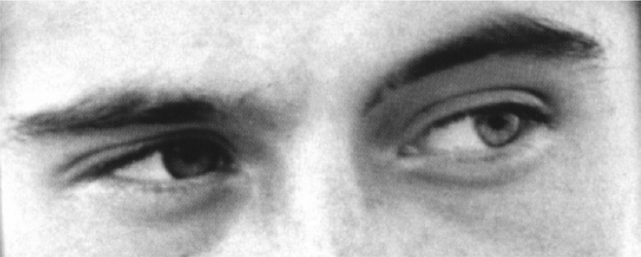
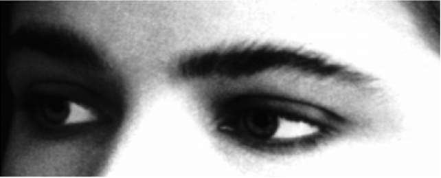
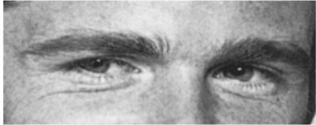

<!DOCTYPE html>
<meta charset="UTF-8">
<html>

<head>
  <title>Sesgos</title>
  <link rel="icon" type="image/png" href="static/media/misc/favicon.ico">
  <link rel="stylesheet" href="static/jspsych/css/jspsych.css">
  </link>
  <script src="static/jspsych/jspsych.js"></script>
  <script src="static/jspsych/plugins/jspsych-html-slider-response.js"></script>
  <script src="static/jspsych/plugins/jspsych-audio-button-response.js"></script>
  <script src="static/jspsych/plugins/jspsych-video.js"></script>
  <script src="static/jspsych/plugins/jspsych-free-sort.js"></script>
  <script src="static/jspsych/plugins/jspsych-survey-text.js?v=6"></script>
  <script src="static/jspsych/plugins/jspsych-html-button-response.js"></script>
  <script src="static/jspsych/plugins/jspsych-survey-multi-choice.js"></script>
  <script src="static/jquery-3.3.1.js"></script>
</head>

<body></body>
<script>

  var bienvenida = {
    type: "html-button-response",
    stimulus: "<font size=5.5><p>¡Hola! 🙂</p><p>Somos estudiantes de Psicología y Economía, y estamos haciendo un estudio sobre la música y la percepción.</p>" +
      "<p>Durante aproximadamente 10 minutos, observarás estímulos variados y responderás preguntas sencillas.</p>" +
      "<p>Al final verás un gráfico interactivo 3D que podrás usar para explorar tus expectativas o sesgos y comparararlos con los de los demás! 🤓</p>" +
      "<p>Para la prueba, <b>debés tener el audio</b> del dispositivo prendido y de lo posible estar en un espacio relativamente tranquilo</p>",
    trial_duration: 900000,
    choices: ['Continuar'],
  };

  var consentimiento = {
    type: "html-button-response",
    stimulus: "<font size=5.5><p>Continuando con el experimento aceptás aportar los datos generados, ayudándonos en nuestra labor de curiosidad científica. </p>" +
      "<p>Si ya juntaste la valentía suficiente, focalizá tu atención todo lo que puedas... y continuá</p>",
    choices: ['Continuar'],
  };

  var instruct_vid = {
    type: "html-button-response",
    stimulus: "<font size=5.5><p>Te mostraremos dos videos cortos.</p>" +
      "<p>Observalos atentamente, luego deberás describirlos con todos los elementos y detalles que puedas.</p>" +
      "<p>Si se demora algunos segundos, por favor ten paciencia</p>",
    choices: ['Continuar'],
  };

  var yacasi = {
    type: "html-button-response",
    stimulus: "Falta muy poco, ¡ya casi terminamos!",
    trial_duration: 5000,
    choices: ['Continuar'],
  };

  var video1 = {
    type: 'video',
    width: 910,
    sources: ['./static/media/stimuli/chinitos.mp4'],
    stop: 15,
    autoplay: true,
    controls: false,
  };
  var video2 = {
    type: 'video',
    width: 950,
    sources: ['./static/media/stimuli/Londres.mp4'],
    stop: 15,
    autoplay: true,
    controls: false,
  };

  var descripcion = {
    type: 'survey-text',
    questions: [
      { prompt: 'Describí el video con el mayor detalle que puedas', value: '', rows: 30, colums: 400 }
    ],
    button_label: 'Enviar',
    trial_duration: 900000
  };

  var audio1 = {
    type: 'audio-button-response',
    choices: ['Menor', 'Mayor', 'No sé'],
    prompt: '<p>¿Qué tipo de acorde es?</p>',
    stimulus: './static/media/audios/1.ogg',
  };

  var audio2 = {
    type: 'audio-button-response',
    choices: ['El primero', 'El segundo', 'No sé'],
    prompt: '<p>Se escuchan dos tonos. ¿Cuál es más agudo?</p>',
    stimulus: './static/media/audios/2.ogg'
  };

  var audio3 = {
    type: 'audio-button-response',
    choices: ['El primer par', 'El segundo par', 'No sé'],
    prompt: '<p>Se tocan dos pares de notas. ¿Cuál tiene notas más alejadas entre si?</p>',
    stimulus: './static/media/audios/3.ogg'
  };


  cols = 10
  var imgs_colores = [];
  for (var i = 1; i <= cols; i++) {
    imgs_colores.push("static/media/colores/" + i + ".png");
  }

  var colores = {
    type: 'free-sort',
    stimuli: imgs_colores,
    prompt: "<p>Ordená los colores según su gradiente, ¡lo más rapido que puedas!</p><p style='font-size:15px'>Esta es solo desde PC</p>",
    trial_duration: 65000,
    button_label: 'Continuar',
  };


  var genero = {
    type: 'html-slider-response',
    labels: ['Mujer', 'Varón'],
    stimulus: 'Indique su género',
    button_label: 'Continuar'
  }

  var pre_hist = {
    type: "html-button-response",
    stimulus: "<font size=5.5><p>Leé la siguiente <b>historia</b>. Visualizá y sentí los escenarios lo más nítidamente que puedas</p>",
    choices: ['Estoy listo']
  };

  relato = '<p>En un restaurante muy elegante, alguien llama al mozo con un grito. Luego toma un trago de café, que está demasiado dulce y tibio. ' +
    '<br>Enojado, se acomoda en su lugar causando un chirrido fuerte con su silla. Por la ventana se ve un día gris, y un edificio que contrasta con una fachada cuadriculada de colores vívidos. ' +
    'Cerca de la entrada del edificio, una mujer, que no parecía poseer más que el viejo colchón violeta donde se acostaba, ríe mientras alimenta a un diminiuto bebé con sobras de una hamburguesa que encontró en el cordón. ' +
    'El café tibio no es tan importante.</p>'

  var historia = {
    type: "html-button-response",
    stimulus: relato,
    trial_duration: 900000,
    choices: ['Continuar']
  };

  var recuerdo = {
    type: 'survey-text',
    questions: [
      { prompt: 'Describa todo lo que recuerde de la <b>historia leída</b> inicial', value: '', rows: 30, colums: 400 }
    ],
    button_label: 'Continuar',
    trial_duration: 900000
  };


  var mate = {
    type: 'survey-multi-choice',
    questions: [{
      prompt: "Un palo de Hockey y una bocha vale $1,10, sabiendo que el palo vale $1,00 más que la bocha. ¿Cuánto vale la bocha?",
      options: ['1,05', '0,05', '0,95', '0,10', 'No sé'], horizontal: true, required: true, button_label: 'Continuar'
    }],
  };

  options_ = ['0 años (nada)', 1, 2, 3, 4, 5, 6, 7, 8, 9, '10 años']
  var años = {
    type: 'survey-multi-choice',
    preamble: 'Indique durante cuantos años sostuvo (mínimo 1 h por semana) las siguientes actividades:',
    questions: [{ prompt: "Interpretación o composición musical", options: options_, horizontal: true, required: true },
    { prompt: "Deporte o act. física individual", options: options_, horizontal: true, required: true },
    { prompt: "Deporte o act. física grupal", options: options_, horizontal: true, required: true },
    { prompt: "Artes plásticas", options: options_, horizontal: true, required: true },
    { prompt: "Artes escénicas", options: options_, horizontal: true, required: true },
    { prompt: "Artes visuales / diseño / fotografía", options: options_, horizontal: true, required: true },
    { prompt: "Investigación científica", options: options_, horizontal: true, required: true },
    { prompt: "Programación", options: options_, horizontal: true, required: true },
    ],
    button_label: 'Continuar',
  };

  options_ = ['0 minutos', '0-30', '30-60 minutos', '1-2 horas', '2-3', '3-5', '5 horas o más']
  var horas = {
    type: 'survey-multi-choice',
    preamble: 'Indique cuantas horas en promedio dedica por día a las siguientes actividades:',
    questions: [{ prompt: "Interpretación o composición musical", options: options_, horizontal: true, required: true },
    { prompt: "Deporte o act. física individual", options: options_, horizontal: true, required: true },
    { prompt: "Deporte o act. física grupal)", options: options_, horizontal: true, required: true },
    { prompt: "Artes plásticas", options: options_, horizontal: true, required: true },
    { prompt: "Artes escénicas", options: options_, horizontal: true, required: true },
    { prompt: "Artes visuales / diseño / fotografía", options: options_, horizontal: true, required: true },
    { prompt: "Investigación científica", options: options_, horizontal: true, required: true },
    { prompt: "Programación", options: options_, horizontal: true, required: true },
    { prompt: "Netflix", options: options_, horizontal: true, required: true },
    { prompt: "Televisión", options: options_, horizontal: true, required: true },
    { prompt: "Facebook", options: options_, horizontal: true, required: true },
    { prompt: "Instagram", options: options_, horizontal: true, required: true },
    { prompt: "Trabajo en PC", options: options_, horizontal: true, required: true },
    ],
    button_label: 'Continuar',
  };


  options_ = [0, 1, 2, 3, 4, 5, 6, 7, 8, 9, 10]
  var subjetivo = {
    type: 'survey-multi-choice',
    preamble: 'Se presentan entidades de distinta naturaleza. Del 1 al 10, puntúe cada una según la importancia que tenga para vos la/el...',
    questions: [{ prompt: "Arte", options: options_, horizontal: true, required: true },
    { prompt: "Matemáticas o lógica", options: options_, horizontal: true, required: true },
    { prompt: "Literatura y humanidades", options: options_, horizontal: true, required: true },
    { prompt: "Audición", options: options_, horizontal: true, required: true },
    { prompt: "Visión", options: options_, horizontal: true, required: true },
    { prompt: "Gusto", options: options_, horizontal: true, required: true },
    { prompt: "Lenguaje", options: options_, horizontal: true, required: true },
    { prompt: "Emoción", options: options_, horizontal: true, required: true },
    { prompt: "Olfato", options: options_, horizontal: true, required: true },
    { prompt: "Tacto, calor", options: options_, horizontal: true, required: true },
    { prompt: "Tacto, texturas", options: options_, horizontal: true, required: true },
    { prompt: "Posición del cuerpo", options: options_, horizontal: true, required: true },
    { prompt: "Imaginación", options: options_, horizontal: true, required: true },
    { prompt: "Orientación en el tiempo", options: options_, horizontal: true, required: true },
    { prompt: "Orientación en el espacio", options: options_, horizontal: true, required: true },
    { prompt: "Afecto", options: options_, horizontal: true, required: true },
    { prompt: "Intelecto", options: options_, horizontal: true, required: true },
    { prompt: "Colores", options: options_, horizontal: true, required: true },
    { prompt: "Dia (0) o noche (10)", options: options_, horizontal: true, required: true },
    ],
    button_label: 'Continuar',
  };

  var empatia = {
    type: 'survey-multi-choice',
    preamble: '¿Qué emoción está sintiendo la persona? Elija la opción correcta:',
    questions: [{ prompt: "", options: ["Alegre", "Compasivo/a", 'Irritado/a', 'Aburrido/a'], horizontal: true, required: true },
    { prompt: "", options: ["Aterrorizadeo/a", "Preocupado/a", 'Arrogante', 'Molesto/a'], horizontal: true, required: true },
    { prompt: "", options: ["Chistoso/a", "Conmocionado/a", 'Deseoso/a', 'Convencido/a'], horizontal: true, required: true },
    { prompt: "", options: ["Chistoso/a", "Insistente", 'Divertido/a', 'Relajado/a'], horizontal: true, required: true },
    { prompt: "", options: ['Irritado/a', 'Sarcastico/a', 'Preocupado/a', 'Simpático/a'], horizontal: true, required: true },
    { prompt: "", options: ["Aterrado/a", "Soñador/a", 'Impaciente', 'Alarmado/a'], horizontal: true, required: true },
    { prompt: "", options: ["Apenado/a", "Simpático/a", 'Incómodo/a', 'Desanimado/a'], horizontal: true, required: true },
    { prompt: "", options: ["Desanimado/a", "Aliviado/a", 'Tímido/a', 'Excitado/a'], horizontal: true, required: true },
    { prompt: "", options: ["Molesto/a", "Hostil", 'Horrorizado/a', 'Ensimismado/a'], horizontal: true, required: true },
    { prompt: "", options: ["Cauteloso/a", "Insistente", 'Aburrido/a', 'Aterrado/a'], horizontal: true, required: true },
    ],
    button_label: 'Continuar',
  }
  var personales = {
    type: 'survey-text',
    questions: [
      { prompt: '¿Cuál es tu nombre y/o apellido?', value: '', columns: 10 },
      { prompt: '¿Cuántos años tenés?', value: '', columns: 10, required: true },
      { prompt: '¿Cuántas horas de sueño tuviste la noche anterior?', value: '', columns: 20, required: true },
      { prompt: '¿En qué barrio vivís?', value: '', columns: 10, required: true },
      { prompt: 'Ingresá tu altura y peso aproximadamente ("ej. 175 cm, 75 kg") ', value: '', columns: 20, required: true },
      { prompt: '¿Tiene o tuvo algun condición psiquiátrica?', value: '', columns: 20, required: true },
    ],
    button_label: 'Continuar',
  };

  var academia = {
    type: 'survey-text',
    questions: [
      { prompt: '¿Cuál es tu nivel de formación académica? Ej. "Secundario Completo", "Posgrado Incompleto", ... ', value: '', columns: 20, required: true },
      { prompt: '¿Qué carrera estudiás o estudiaste? (Si no, dejá vacío)', value: '', columns: 30, required: true },
      { prompt: 'Si estás haciendo una carrera, ¿hace cuántos años?', value: '', columns: 30, required: true },
      { prompt: '¿Hacés alguna actividad extracurricular como hobbie o trabajo? ¿Cuál?', value: '', columns: 30, required: true },
    ],
    button_label: 'Continuar'
  }

  jsPsych.data.addProperties({ test: 'sesgos' })

  //timeline es la serie de pasos del experimento
  jsPsych.init({
    timeline: [bienvenida, consentimiento, pre_hist, historia, instruct_vid, video1,
      descripcion, video2, descripcion, colores, audio1, audio2, audio3, mate, empatia,
      academia, personales, genero, yacasi, años, horas, subjetivo, recuerdo],

    on_finish: function () {
      $.ajax({
        type: "POST",
        data: { 'data': jsPsych.data.get().json() },
        url: "https://ihum.ai/data-server/postdata",
        headers: { 'Content-Type': 'application/x-www-form-urlencoded' },
        async: false,
      }); window.location = 'https://ihum.ai/sesgos/app.html'
    },

  });
  //
</script>

</html>>>>